IEEE ISMAR 2024 · Best Paper Nominee
RoomRecon: High-Quality Textured Room Layout Reconstruction on Mobile Devices
An interactive mobile pipeline that reconstructs a room’s permanent structure (walls, floor, and ceiling) and textures it from a few AR-guided photos, producing complete, editable 3D replicas for VR and AR.
- Authors
- Seok Joon Kim, Dinh Duc Cao, Federica Spinola, Se Jin Lee, Kyu Sung Cho
- Topics
- Mobile AR, RGB-D reconstruction, room layout, texturing, inpainting
- Venue
- IEEE International Symposium on Mixed and Augmented Reality (ISMAR), 2024
Motivation
Scanned rooms are static, unstructured, and poorly textured.
Phones with depth sensors can scan a room, but the result bakes in every piece of furniture, has no notion of what is a wall and what is a chair, and is textured from hundreds of blurry video frames.
Moving a sofa means rescanning. And state-of-the-art assignment-based texturing (MVSTex, SeamlessTex) suffers from defects that stem from the capture itself: camera-pose drift and incomplete meshes misplace textures, multiple images per wall create seams, furniture leaves untextured holes, and reflective or transparent surfaces look inconsistent.
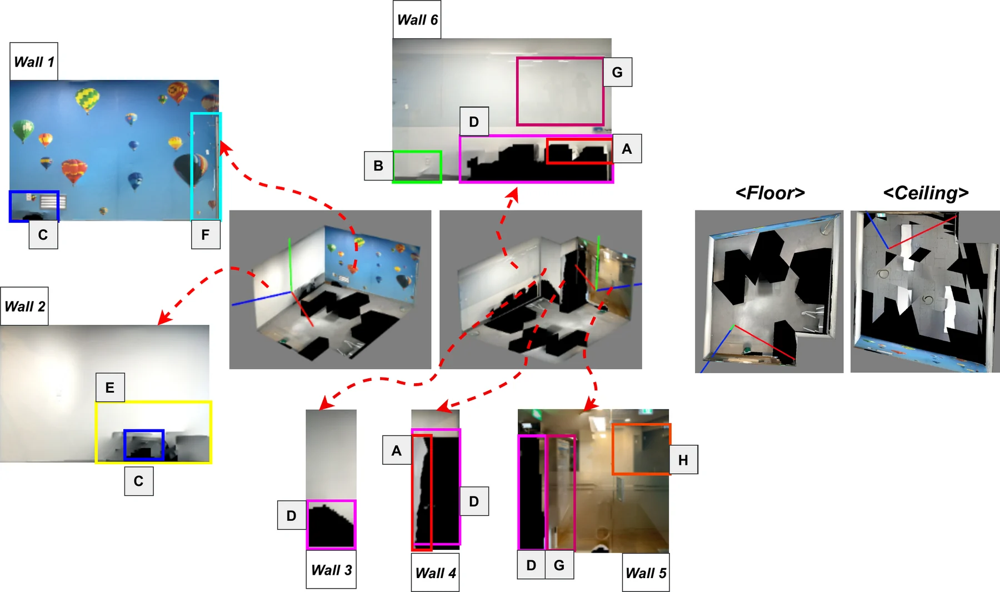
RoomRecon addresses both problems: it models only the permanent room layout, so the model stays valid when furniture changes, and it controls texture quality at the source by guiding the user to capture a few deliberate, sharp images.
Pipeline
Two phases: reconstruct the layout, then texture it deliberately.

Phase 1 scans the room with an RGB-D phone (an iPhone with ARKit), builds a mesh on the fly, estimates the room layout, filters and combines the meshes, and then guides the user to recapture a small set of texture images. Phase 2 textures the combined mesh with those images, renders every textured plane into a 2D image (Plane2Image), and refines the images before mapping them back onto the model.

Layout & mesh
Separating the room from its contents.
The scan mesh is fused on device from ARKit depth and poses (KinectFusion-style, 20 mm voxels), with a UI that shows scanned and unscanned areas so the mesh is complete. A room layout gives wall planes, corners, and floor and ceiling heights.
- Filtering: mesh faces outside the wall loop are removed, as are faces within 5 cm of a wall or within 10 cm and parallel to it. What remains is the furniture, still needed for occlusion tests during texturing.
- Remeshing: walls, floor, and ceiling are remeshed with constrained Delaunay triangulation and merged with the filtered mesh, with every segment labelled as wall, floor, ceiling, or object.
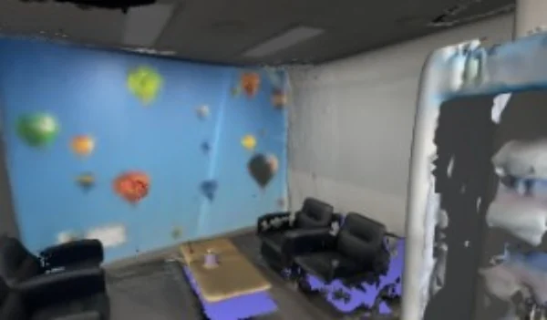
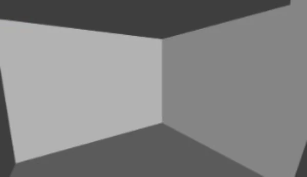
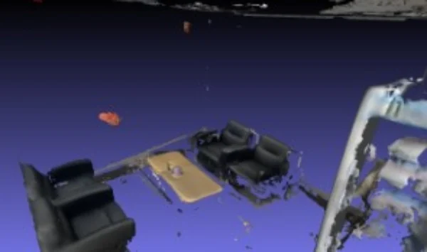
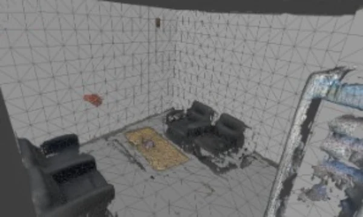
AR-guided capture
Divide and conquer: one sharp photo per wall section.
Texture quality depends most on the input images. Texturing a wall from a single image avoids seams and misalignment, so RoomRecon asks the user for a few deliberate photos instead of reusing the scan stream.
- Divide: from the camera’s field of view, compute the distance at which one portrait photo covers a wall, placing the camera at about mid-wall height (1.22 m). If that position is too far away or outside the room, the wall is split recursively into sub-planes until each can be covered from a valid position.
- Conquer: AR cues (the target plane highlighted in red, an arrow, a virtual phone at the optimal pose, and a haptic proximity alert) guide the user to each capture position. Captured sections turn back to their natural colour.
These recaptured images are 39% sharper than the raw scan frames and 34% sharper than the sharpest sampled frames used by prior methods.
Texturing
The combined mesh is textured with existing assignment-based methods (MVSTex, SeamlessTex), fed with the recaptured images. A per-face occlusion test rejects images whose view of a face is blocked by other geometry.
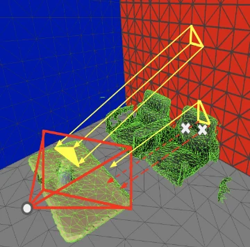
Refinement
Plane2Image: editing 3D textures as ordinary images.
Each textured plane is rendered by a virtual camera into a 2D image (500 px per metre), and the plane is simplified back to two triangles mapped onto that image. Every wall, floor, and ceiling now corresponds to exactly one image, so improving a texture means editing or replacing an image.
ImageMode: inpainting and generative edits
Holes left by furniture are filled with ZIT inpainting, chosen for its trade-off between quality and speed and for restoring the straight edges common indoors (doors, windows, frames). Text-guided diffusion (PowerPaint, server-side) can also add new content.
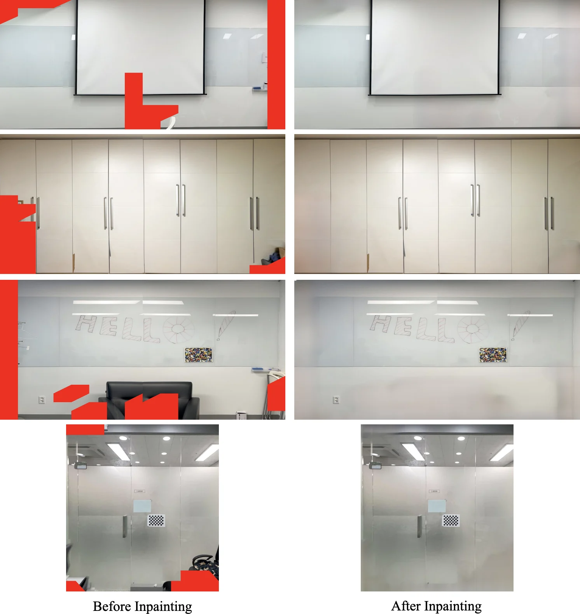
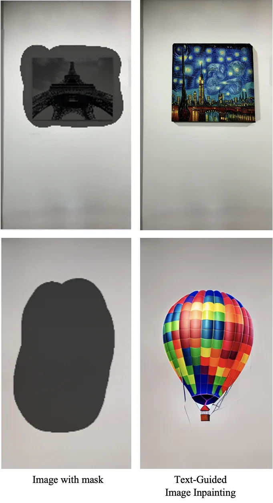
SampleMode: floors and ceilings
Repeating floor and ceiling patterns are especially sensitive to pose drift. Instead of stitching them from photos, the user captures (or picks) one sample and tiles it with adjustable width, height, offset, and angle.
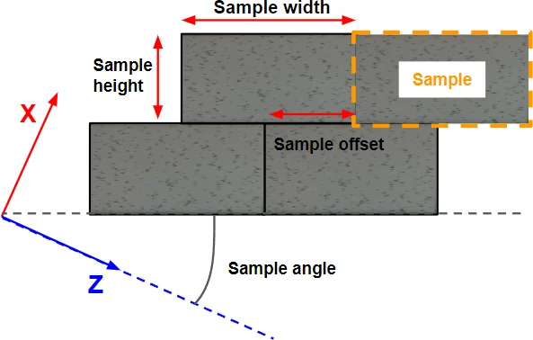
Results
Better textures from fewer images, in less time.
Evaluated on 13 rooms (7 office and 6 household) captured with an iPhone 12 Pro. All six texturing methods run inside the same RoomRecon pipeline; ours differ only in using the AR-recaptured images. Whole-wall renders are compared against manually rectified, furniture-free ground-truth photos.
| Method | PSNR (dB) ↑ | SSIM ↑ | ST-LPIPS ↓ | Blurriness ↓ |
|---|---|---|---|---|
| ColorMapOpt | 16.09 | 0.77 | 0.25 | 0.44 |
| PlaneOpt | 16.49 | 0.77 | 0.25 | 0.41 |
| MVSTex | 17.09 | 0.80 | 0.19 | 0.33 |
| SeamlessTex | 17.61 | 0.81 | 0.18 | 0.34 |
| Ours (MVSTex) | 20.35 | 0.91 | 0.11 | 0.29 |
| Ours (SeamlessTex) | 20.80 | 0.92 | 0.10 | 0.29 |
Both of our variants score almost identically, regardless of the underlying texturing algorithm: a few high-quality inputs matter more than a sophisticated texturing method. In a local evaluation on small detailed regions, where every method tends to use a single image anyway, our variants match the best baselines on PSNR and SSIM and produce sharper textures (blurriness 0.20 vs. 0.22–0.25).
| Method | Images used | Texturing (s) | Full pipeline on iPhone (s) |
|---|---|---|---|
| MVSTex | 259 (sampled) | 8.48 | 28.33 |
| SeamlessTex | 259 (sampled) | 32.62 | – |
| Ours (MVSTex) | 11 (recaptured) | 3.23 | 9.48 |
| Ours (SeamlessTex) | 11 (recaptured) | 4.44 | – |
The timing excludes the extra capture pass, which depends on the user’s familiarity with the app. In a perceptual study, 30 participants chose the best of four textured versions for 20 walls; our two variants received 520 of 600 votes.

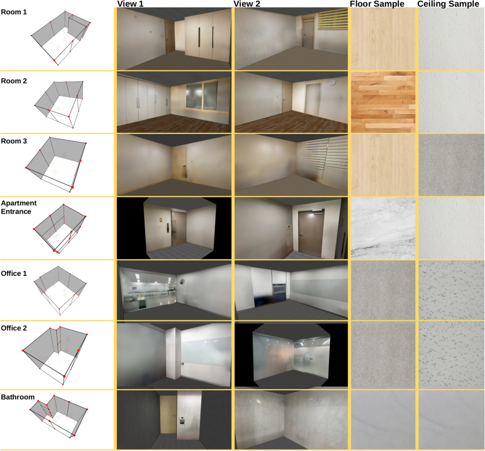
Limitations
Limitations and future work.
- Narrow spaces: in corridors the divide step may find no valid capture position inside the room.
- Interaction design: the capture UI is one possible design; user interaction time and a thorough usability study across user groups remain future work.
- Beyond one room: rooms reconstructed in a shared coordinate frame already combine into whole floors, and input from real-estate and interior-design experts could shape the next version.
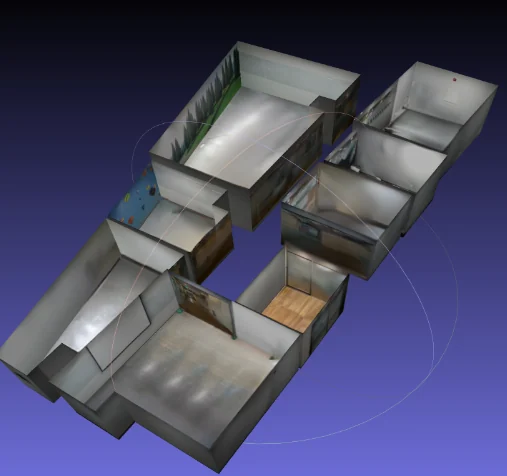
Citation
Citation
@inproceedings{kim2024roomrecon,
title = {{RoomRecon}: High-Quality Textured Room Layout Reconstruction on Mobile Devices},
author = {Kim, Seok Joon and Cao, Dinh Duc and Spinola, Federica and Lee, Se Jin and Cho, Kyu Sung},
booktitle = {IEEE International Symposium on Mixed and Augmented Reality (ISMAR)},
year = {2024},
doi = {10.1109/ISMAR62088.2024.00069}
}